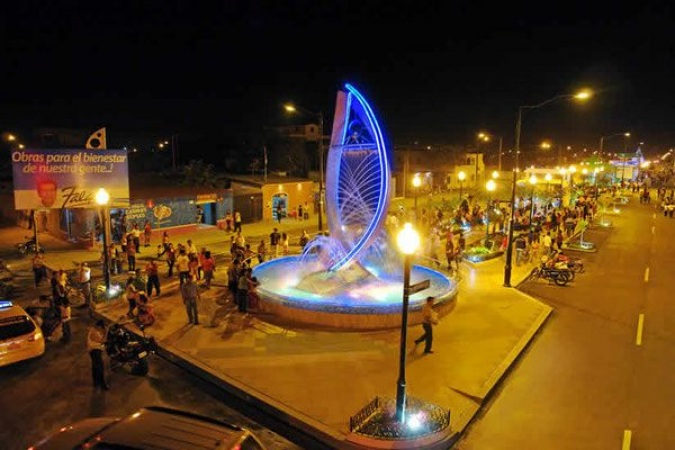

Parque Lineal fue inaugurado el 12 de diciembre de 2009 es una obra que colabóró para la regeneración urbana del barrio Brisas del Mar. Estas construcciones están ubicadas al suroeste de la capital orense y, se incluyen, dentro de las obras de atracción turística de la ciudad.
En éste lugar se puede admirar jardineras, juegos infantiles, área de patinaje, comedores, mirador, área de actos culturales y exposiciones, agencia bancaria, Unidad de Policía Comunitaria, piletas con iluminación y música ambiental.